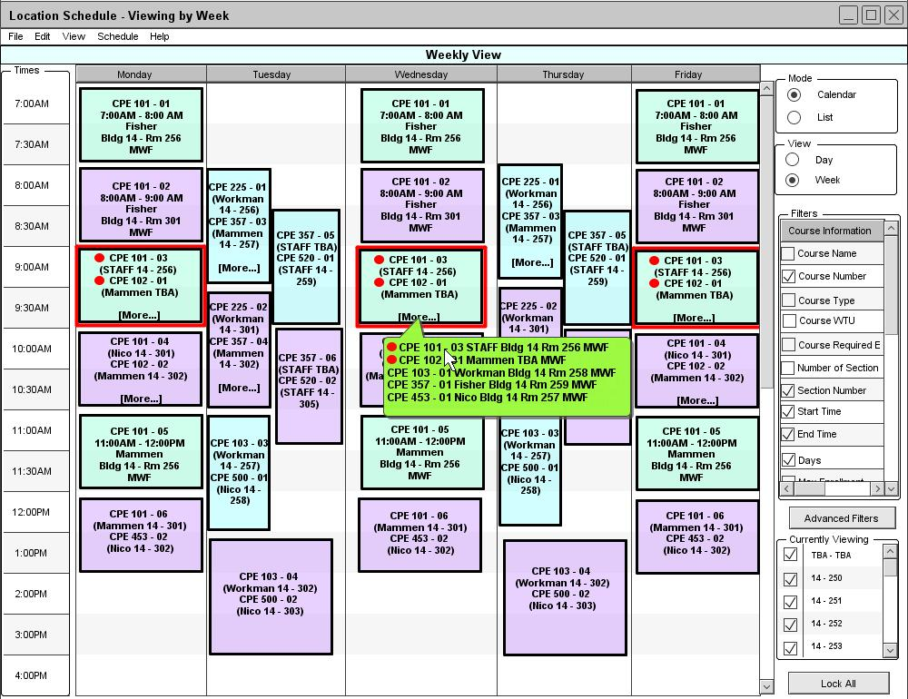
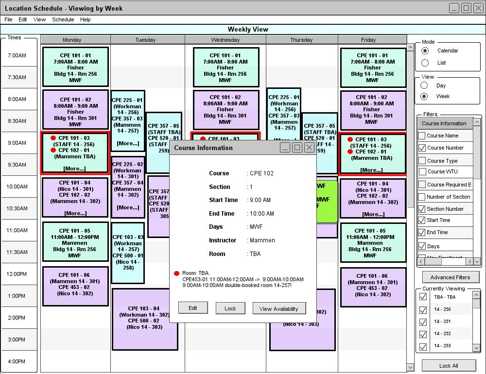
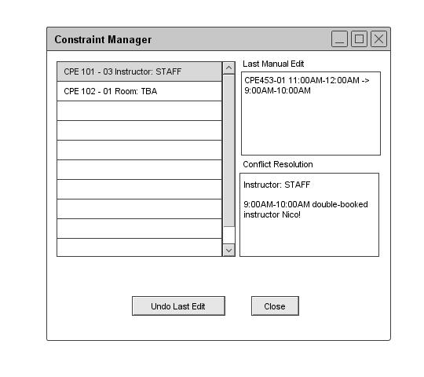

2.4.4. Conflict Resolution
A conflict is defined as constraint violation or a preference violation. Constraint violations are impossibilities created by manual edits. The two defined constraint violations are double-booking rooms and double-booking instructors. Preference violations are undesirable, but unlike constraint violations, do not render the schedule unviable. The defined list of preferences are as follows: not overlapping certain courses, assigning specific rooms to courses, offering courses on certain days, keeping labs in close time proximity with their corresponding lectures. The Scheduler checks for conflicts after an automatic schedule generation or a manual edit. Therefore, conflicts are automatically updated on any schedule view whenever the schedule is modified. Constraint and preference violations are colored red and yellow on the schedule, respectively. A constraint violation is resolved immediately by changing a room to TBA or an instructor to STAFF. The red highlighting shows the administrator that the most recent manual edit forced the scheduler to make these changes, and that there are unspecified fields in the schedule as a result.
Due to the limit of available rooms and instructors, a newly generated schedule may have preference violations. However, the Scheduler never automatically generates schedules with constraint violations. Constraint violations can only result from manual edits. Manual editing is described in section 2.4.3. Manual Editing.
An administrator manually edits the schedule in Appendix A by changing the course time of CPE 453-01 from 11:00AM-12:00PM MWF to 9:00AM-10:00AM MWF. The new schedule is displayed in Figure 51.

Figure 51: Constraint Violations.
In Figure 51, two constraint violations were created and resolved as a result of the administrator's last manual edit. If the administrator makes a new manual edit, all the current information about resolved constraint violations are erased. The Scheduler marks the courses that were involved in any resolutions. This is done by highlighting in red each course's box and placing a red circle beside each course's name. The administrator's manual edit created both kinds of constraint violations simultaneously in this case. Instructor Nico was already booked for CPE 101-03 from 9:00AM-10:00AM MWF. The Scheduler resolves this by changing the instructor for CPE 101-03 to STAFF. The room 14-257 was already booked for CPE 102-01 during this time slot. The Scheduler resolves this violation by changing the room of CPE 102-01 to TBA. As indicated in section 2.5.1, a scheduling administrator can click on a course for more detailed information. When the administrator opens the course information for CPE 101-03, conflict resolution information appears.
Figure 52: Double-booking an instructor.
In Figure 52, the course information displays the type of constraint violation that was resolved. In this case, an instructor was changed to staff. It also displays the last manual edit that caused the violation and the instructor that was double-booked. For information on the constraint violation concerning a room, the administrator can open the course information for CPE 102-01, which had its room taken from it.

Figure 53: Double-booking a room.
In Figure 53, the course information again displays the type of constraint violation that was resolved. This violation, however, is a double-booked room which was changed to TBA for a course. The double-booked room and its time slot is shown.
To obtain an organized view of all resolved constraint violations, the scheduling administrator may select Conflicts from the View drop down menu. This opens the Constraint Manager.

Figure 54: Constraint Manager.
The administrator cannot edit the schedule while this window is open. The Last Maual Edit text box displays the most recent manual edit. A scroll pane inside the window lists all resolved constraint violations. The name of each resolved constraint violation provides a brief description. When an administrator selects one from the list, detailed information about the violation and resolution is displayed in the Conflict Resolution textbox. The administrator may choose to press the Undo Last Edit button. This undos the last manual edit and erases the current conflict resolution information. When the administrator presses the Close button, the Constraint Manager closes.
Preference violations are handled differently by the Scheduler. The Scheduler can generate a schedule with preference violations and it is left to the administrator to fix them. Section 2.4.5.2. Schedule Quality will define schedule quality and discuss ways for an administrator to deal with preference violations.
Prev: manual | Next: schedule-attributes | Up: advanced-schedule | Top: index